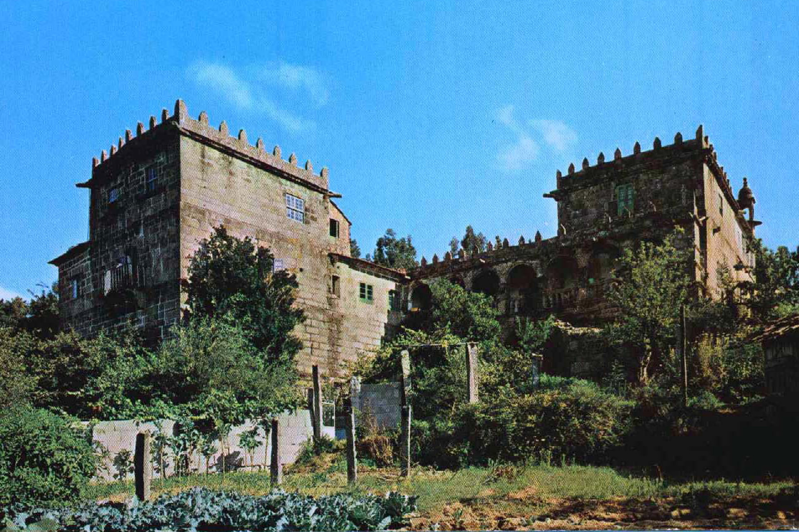
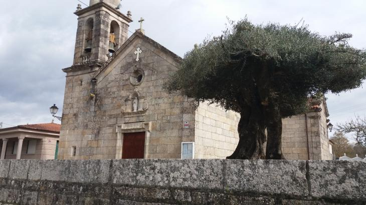
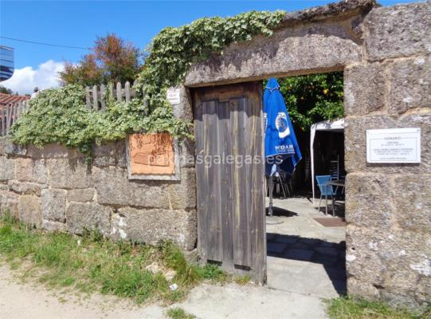
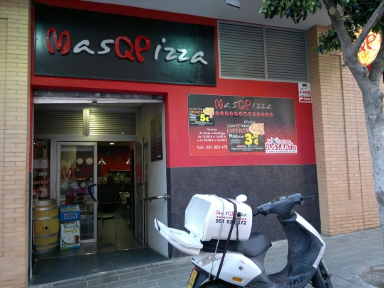

O banco de Parderrubias é un mirador sobre o alto do Coto de Pías a 168.2m de altura sobre a altura do mar.
En San Martiño da Picoña atópase un dos pazos máis fermosos de Galiza, coñecido co nome da “Casa Grande” e constitúe a mellor mostra do esplendor dos señores da Picoña, de gran relevancia na comarca. Foi fundado no ano 1543 por D. Morguete Rodríguez e a súa xurisdición foi outorgada por Felipe II. Lamentablemente, o pazo foi convertido en vivendas unifamiliares para os que tiñan posesión destas terras, polo que quedan poucos elementos do pazo inicial catalogado como un nos que se presentaba maior riqueza dos arredores.
Igrexa de Santa María deSalceda Está situada ao pé dunha cordilleira que se prolonga de Norte a Oeste, sobre unha ampla chaira que forma a veiga do río Caselas. Santa María de Salceda debe a súa orixe a un Mosteiro da Regra de San Bieito, fundado sobre o ano 914 pola Raíña Dona Aragonta, esposa repudiada de Ordoño II. A freguesía de Santa María de Salceda foi adquirida por Alemparte Correa ao rei Felipe II, para asentar nela a casa-pazo de Pegullal. Coroando o balcón do pazo de Avalle, restaurado, respectando as súas formas orixinais, hai un anxo suxeitando o sol que dá orixe ao escudo de armas do Concello. Santa María divídese en barrios, onde os máis coñecidos son o da Esfarrapada, que é o centro da vila, A Feira e Castro Barreiro. Estes dous últimos barrios integran un dos carnavais máis antigos do mundo onde presentan a súa rivalidade a través de diversos actos que teñen lugar o luns e martes de Entroido.
Asador Extrema. Restaurante con comida da tierra abulense i extremeña
A Calustra. Restaurante con comida mediterranea e tapería.
MasQPizza. Pizzería